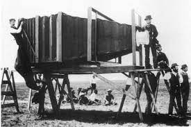

Invenções do século XIX (19)
No século XIX, novas máquinas e aparatos técnicos transformaram o mundo rapidamente, em uma velocidade jamais vivida pela humanidade. A produção e as trocas comerciais se aceleraram com as indústrias, as locomotivas e os navios movidos a vapor e novos conhecimentos produzidos pela ciência vão transformando a percepção que se tinha sobre o mundo, cada vez mais mediado pela tecnologia. A invenção da fotografia, por exemplo, mudou radicalmente a visão sobre a arte, já que uma máquina passou a registrar pessoas e paisagens com um único clique, substituindo horas e horas do trabalho do artista.
